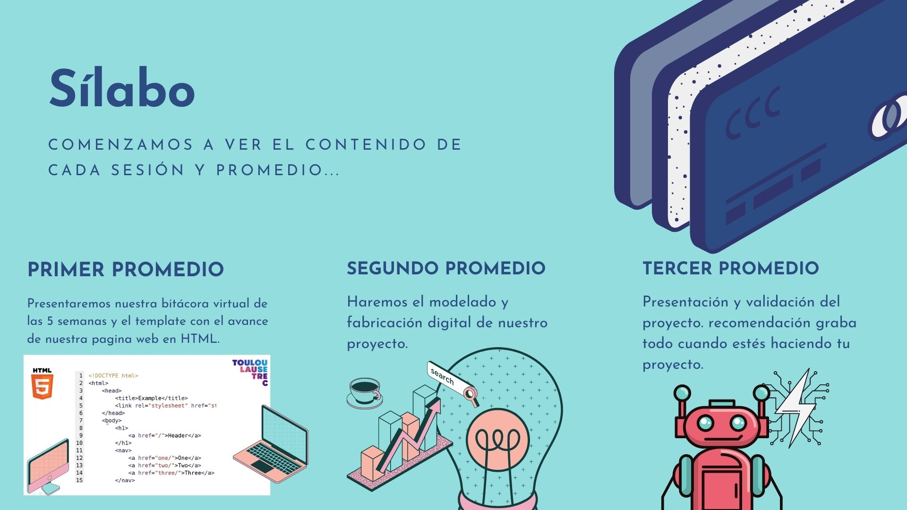
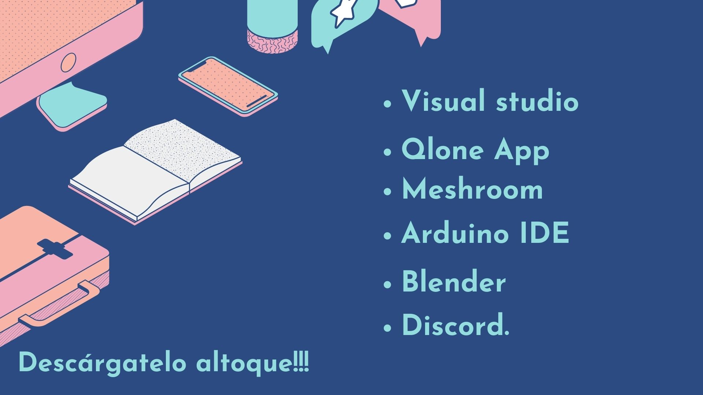

Semana 1

Sílabo
• Primer promedio: Presentaremos nuestra bitácora virtual de las 5 semanas y el template con el avance de nuestra página web en HTML.
• Segundo promedio: Haremos el modelado y fabricación digital de nuestro proyecto.
• Tercer promedio: Presentación y validación del proyecto. recomendación graba todo cuando estés haciendo tu proyecto.
Apps
• Primer promedio: Presentaremos nuestra bitácora virtual de las 5 semanas y el template con el avance de nuestra página web en HTML.
• Segundo promedio: Haremos el modelado y fabricación digital de nuestro proyecto.
• Tercer promedio: Presentación y validación del proyecto. recomendación graba todo cuando estés haciendo tu proyecto.
